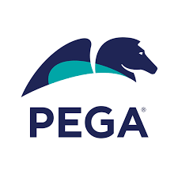
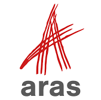

Pegasystems
Software Engineering Intern
May 2019 to August 2019
Designed and created an automated environment to test all supported database platforms with Jenkins pipelines and Gradle plugins. Wrote bash scripts to automate software installations and periodic job runs. Environment used devops artifacts to test against historical software versions and Dockerized databases for fast setup and easy cleanup.

Aras Corporation
Software Engineering Intern
June 2018 to August 2018
Wrote automated QA testing using C# and Selenium to assess whether upgrades on clients’ instances of the software interfered with past fixes. Developed testing API and framework.
Programming Intern
July 2015 to August 2015
Created industry-level software development tutorials for writing web applications with a C# and .NET front end and an Aras Innovator back end.